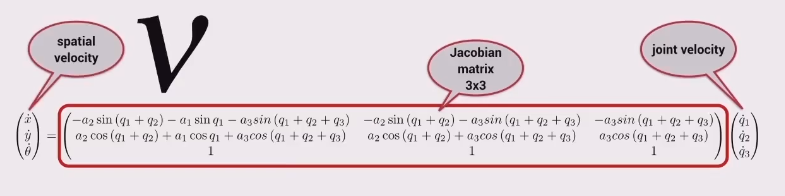
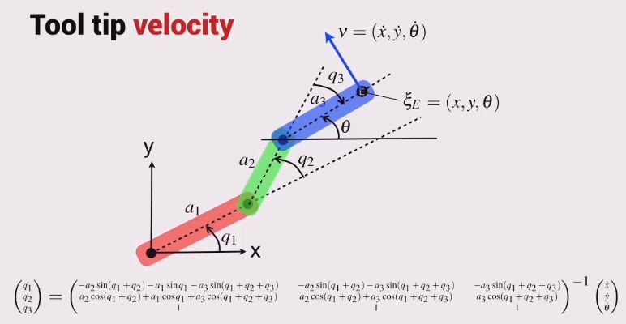

Remember a 3-joint planar arm is able to control its orientation independently of its position.
Find the forward kinematics transform matrix, then
- take the derivative of the translation part and arrange in matrix form,
- then do the same for the rotational part,
- stack them together and you have the 3x3 Jacobian matrix multiplied by the joint velocity vector equals the spatial velocity.

Therefore

Also note
- the number of rows of the Jacobian matrix is equal to the dimension of the robot’s task space,
- and the number of columns of the Jacobian matrix is equal to the dimension of the robot’s configuration space.